1핀톡은 이런 앱이에요
현장 도면(PDF·DWG) 위에 번호 핀을 찍고, 그 자리에 내용·사진·댓글을 남기는 앱이에요. 하자뿐 아니라 현장 이슈, 도면 확인 요청, 협력업체 전달사항까지 위치와 함께 기록해요.
- 팀별 색 핀: 공사안전품질전기설비. 핀 이름은 팀 글자 + 팀 안 번호예요(공1, 안2 …). 번호는 도면·팀마다 찍은 날짜 순서로 매겨져요.
- 함께 쓰기: 로그인한 사람끼리 협업 도면의 핀·사진·댓글이 몇 초 안에 서로 들어가요.
- 사진대지 PDF: 핀 표시 도면, 팀·업체별 현황표, 조치 전·후 사진대지를 한 번에 만들어 바로 보내요.
- 균열관리 엑셀: 품질팀 균열 핀으로 「콘크리트 구조물 균열관리 현황」 양식(대장·평면도·사진대지·사진장부)을 그대로 채워요.
- 신호가 없어도: 지하층처럼 인터넷이 끊겨도 핀과 사진은 휴대폰에 보관됐다가 다시 연결되면 자동으로 올라가요.
2설치 (홈 화면에 추가)
핀톡은 앱스토어 없이 인터넷 주소로 여는 웹앱이에요. 한 번 홈 화면에 추가해 두면 일반 앱처럼 아이콘을 눌러 바로 열리고, 주소창 없이 화면을 넓게 써요.
주소: daegeon1208-ui.github.io/pintalk/
- 사파리로 위 주소를 열어요.다른 앱 안에서 링크를 눌러 열렸다면, 화면 오른쪽 아래나 ⋯ 메뉴의 Safari로 열기를 먼저 눌러 주세요.
- 화면 아래(또는 주소창 옆)의 공유 버튼 을 눌러요.공유 버튼이 안 보이면 주소창 옆 ⋯ 를 누른 뒤 공유를 눌러요.
- 올라온 목록을 위로 밀어 홈 화면에 추가 를 눌러요.목록에 없으면 맨 아래 더 보기나 작업 편집에서 찾을 수 있어요.
- 이름이 핀톡인지 보고 오른쪽 위 추가를 눌러요.웹 앱으로 열기 스위치가 보이면 켜 둔 채로 추가하세요.
- 홈 화면에 생긴 핀톡 아이콘을 눌러 열어요. 다음부터는 이 아이콘으로 열면 돼요.
- 크롬으로 위 주소를 열어요.다른 앱 안에서 열렸다면 오른쪽 위 ⋮ 메뉴의 다른 브라우저로 열기나 Chrome으로 열기를 먼저 눌러 주세요.
- 화면 아래에 앱 설치 안내가 뜨면 바로 설치를 눌러도 돼요. 안 뜨면 다음 단계로.
- 오른쪽 위 점 세 개 버튼 를 눌러요.
- 홈 화면에 추가를 누르고, 이어서 설치(또는 추가)를 눌러요.메뉴에 앱 설치로 나오기도 해요. 같은 기능이에요.
- 홈 화면(또는 앱 목록)에 생긴 핀톡 아이콘을 눌러 열어요.
3처음 연결과 로그인
처음 열면 ① 서버 연결 → ② 로그인 두 단계가 나와요. 관리자가 보낸 자동 연결 링크로 열면 서버 주소와 PIN이 저절로 들어가서 ② 로그인부터 시작해요.
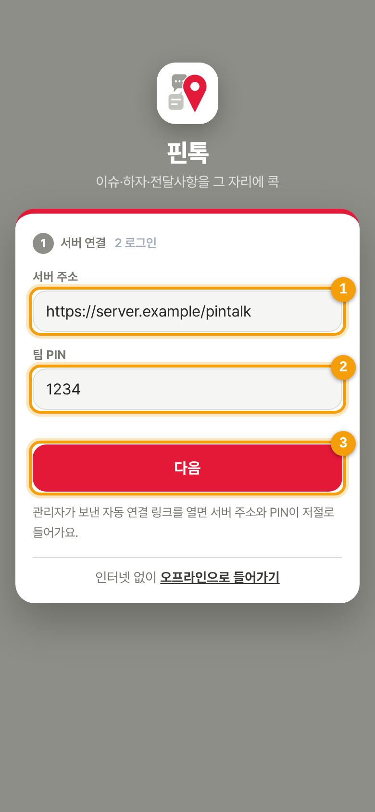
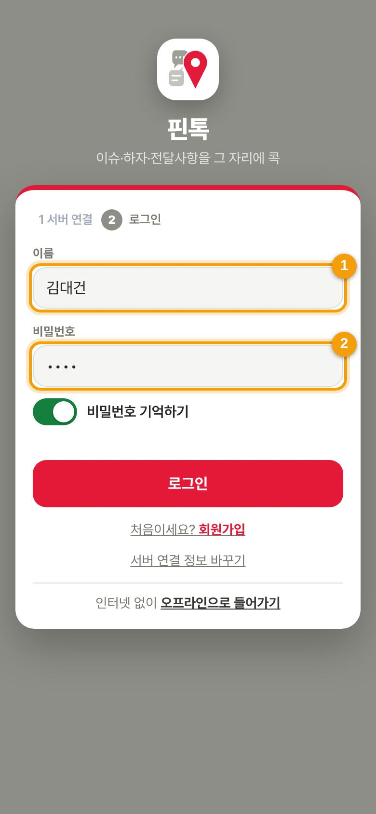
① 서버 연결
- 서버 주소: 관리자에게 받은 주소를 그대로 넣어요.
- 팀 PIN: 관리자에게 받은 번호예요.
- 다음을 누르면 로그인 화면으로 넘어가요.
② 로그인
- 이름: 실명으로 넣어 주세요. 핀·댓글에 이 이름이 표시돼요.
- 비밀번호: 4자 이상. 처음 쓰는 사람은 아래 회원가입에서 이름·비밀번호(두 번)·팀을 넣고 가입해요.
- 비밀번호 기억하기를 켜 두면 다음부터 바로 열려요.
4도면 목록
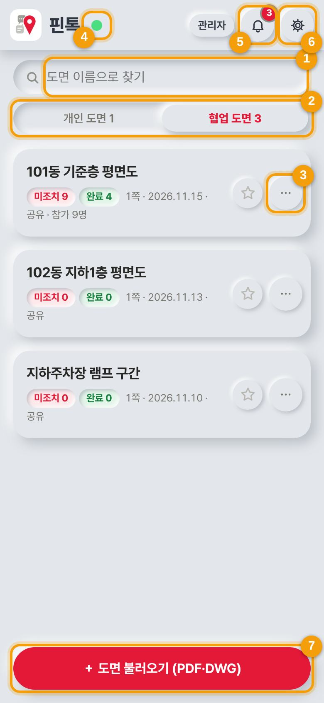
- 검색: 도면 이름 일부만 넣어도 바로 찾아요.
- 개인 도면 / 협업 도면 탭으로 나눠 봐요(15번 참고). 카드에는 미조치·완료 핀 수, 쪽 수, 올린 날짜, 참가자가 보여요. ☆를 누르면 즐겨찾기가 되어 목록 맨 위에 고정돼요.
- ⋯: 도면 설정을 열어요(5번). 남이 비밀번호를 건 도면은 비밀번호를 넣기 전까지 ⋯ 이 흐리게 보이고 열리지 않아요.
- 연결 점: 초록이면 서버와 연결됨, 빨강이면 끊김이에요. 누르면 자동 연결 링크 보내기와 로그아웃이 있어요.
- 🔔 알림: 빨간 숫자는 아직 안 읽은 알림이에요(14번).
- ⚙️ 설정(16번).
- ＋ 도면 불러오기: 메일·파일 앱에 받은 PDF나 캐드 DWG를 골라요. DWG는 휴대폰 안에서 PDF로 바꿔 넣어요.
5도면 설정과 쪽 편집
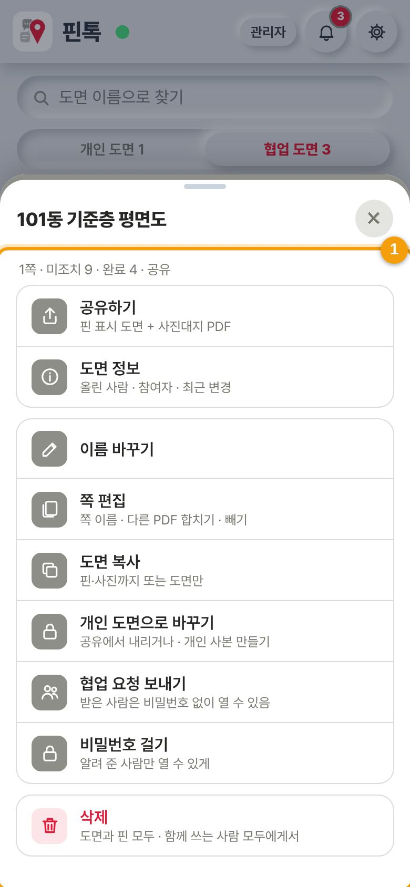
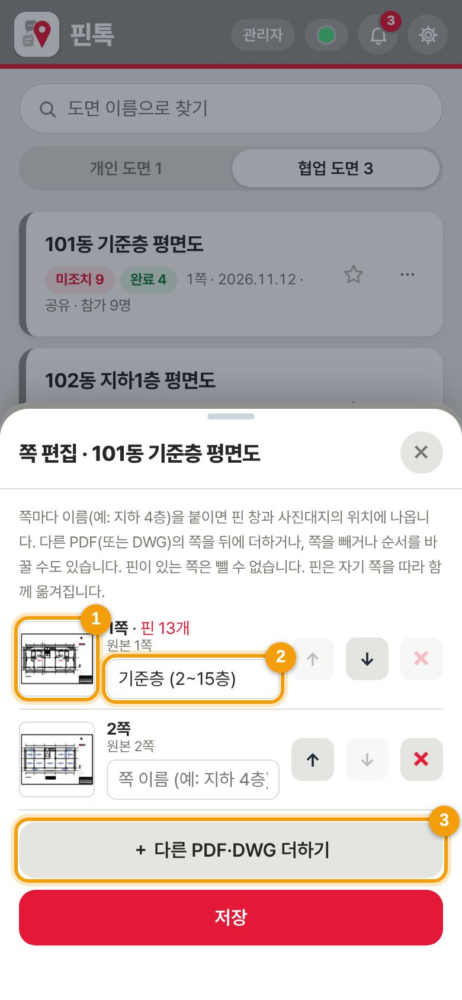
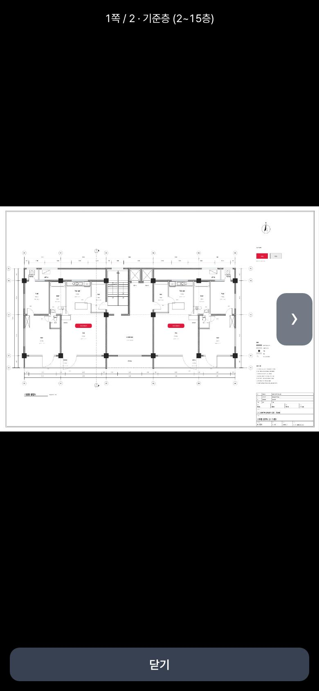
- 도면 설정에 있는 것들:
- 공유하기: 핀 표시 도면과 사진대지를 PDF로 만들어 보내요.
- 도면 정보: 올린 사람, 팀별 핀 수, 참가자, 최근 바뀐 핀.
- 이름 바꾸기 · 쪽 편집 · 도면 복사(핀·사진까지 또는 도면만). 협업 도면은 올린 사람과 관리자만 할 수 있어요.
- 개인 도면으로 바꾸기 / 협업 도면으로 바꾸기. 협업으로 바꾸면 먼저 도면 파일(MB)을 올리고, 이어서 핀이 “핀 올리는 중 42% (32/75개)”처럼 진행률로 보여요. 사진이 많으면 몇 분 걸리니 100%가 될 때까지 핀톡을 켜 두세요.
- 협업 요청 보내기, 비밀번호 걸기 (협업 도면, 올린 사람·관리자).
- 삭제: 협업 도면은 함께 쓰는 사람 모두에게서 지워지니 조심하세요.
쪽 편집
- 작은 도면을 누르면 크게 볼 수 있어요. 두 손가락으로 확대하고, ‹ › 로 다른 쪽을 넘겨 봐요.
- 쪽 이름(예: 지하 4층)을 붙이면 도면 화면과 사진대지에 이 이름이 나와요. PDF에 미리 쪽 이름이 들어 있으면 불러올 때 저절로 채워져요.
- 다른 PDF·DWG 더하기로 쪽을 합치고, ↑ ↓ 로 순서를, ✕ 로 쪽을 빼요. 핀이 있는 쪽은 뺄 수 없어요.
6도면 화면과 거르기
도면을 누르면 열려요. 두 손가락으로 벌리면 확대, 한 손가락으로 끌면 이동이에요.
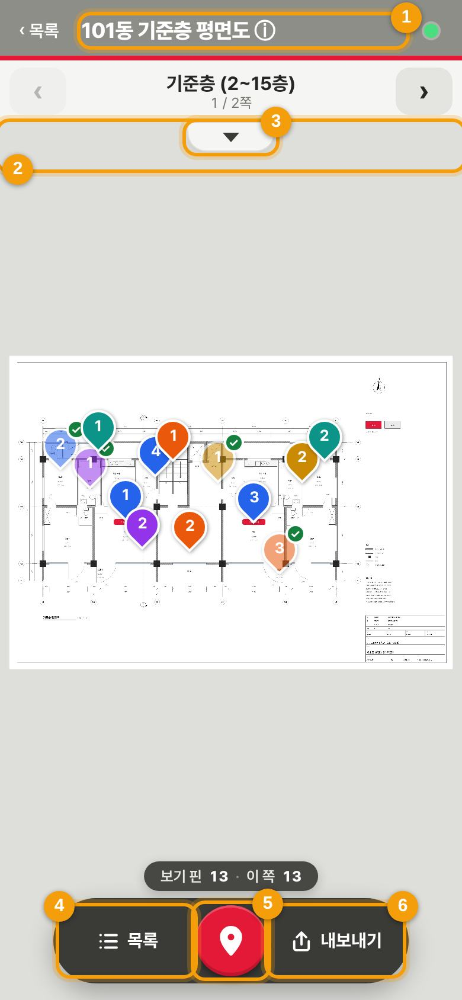
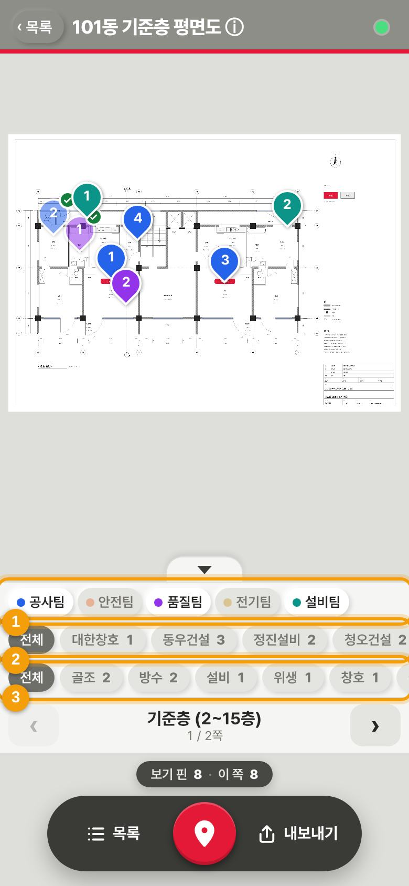
도면 화면
- 도면 이름(ⓘ): 누르면 도면 정보가 나와요.
- 팀 · 업체 · 공종 줄: 보고 싶은 핀만 골라 봐요.
- ▲ 탭: 위로 밀거나 한 번 누르면 거르기 줄이 접히고, 아래로 밀거나 다시 누르면 펼쳐져요. 아래 작은 독에 보기 핀(거른 전체)과 이 쪽 핀 수가 나와요.
- 목록: 찍은 핀과 댓글을 한눈에(11번).
- 핀 버튼: 핀을 찍고 고정하는 가운데 빨간 버튼(7번).
- 내보내기: 사진대지 PDF나 부분 캡처(12번).
거르기
- 팀 버튼을 누를 때마다 그 팀 핀이 보였다 숨었다 해요. 여러 팀을 함께 볼 수 있어요.
- 업체 줄과 3 공종 줄은 고른 팀의 핀에 있는 업체·공종만 나와요. 전체를 누르면 거르기가 풀려요.
7핀 찍기
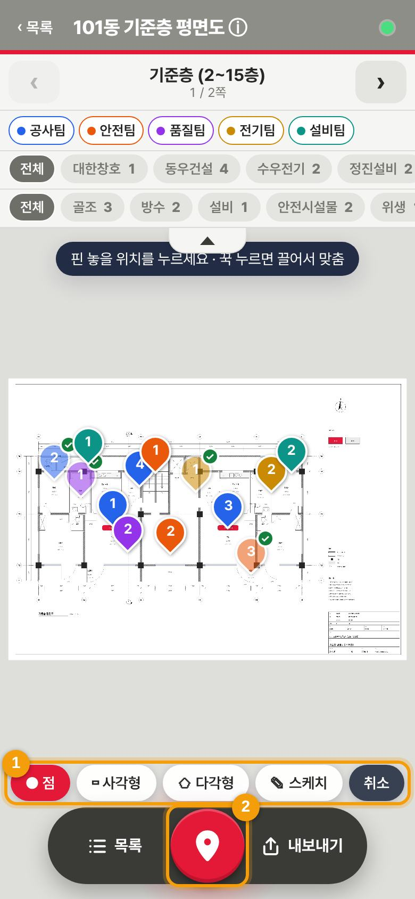
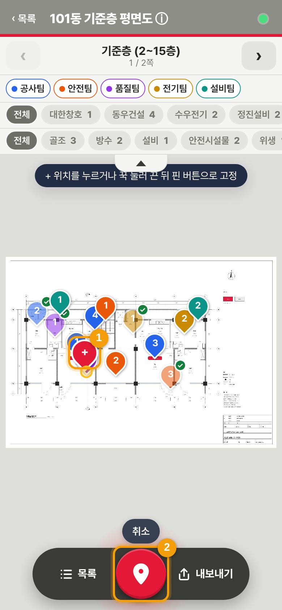
- 가운데 핀 버튼을 누르면 핀 찍기가 시작되고 아래에 핀 모양(점·사각형·구름·다각형·스케치)이 나와요. 보통은 점이면 돼요.
- 도면에서 위치를 한 번 누르면 빨간 ＋ 임시 핀이 놓여요. 다른 곳을 누르면 옮겨지고, 꾹 누르면 끌어서 맞출 수 있어요.
- 핀 버튼을 한 번 더 누르면 고정되고 핀 창이 열려요. 그만두려면 취소.
8핀 내용과 사진
핀 창은 위에 도면, 아래에 내용이 반씩 보여요. 손잡이를 올리면 크게, 내리면 닫혀요. 적는 즉시 저장되고, 창 위 ‹ › 로 다음 핀으로 넘어가요.
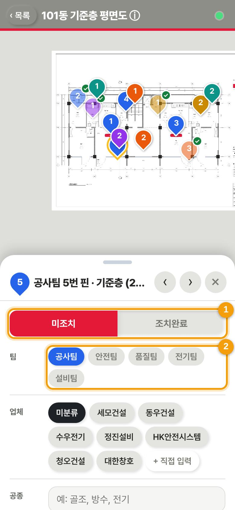
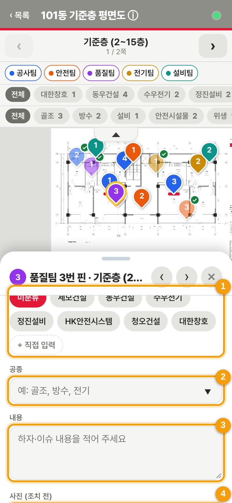
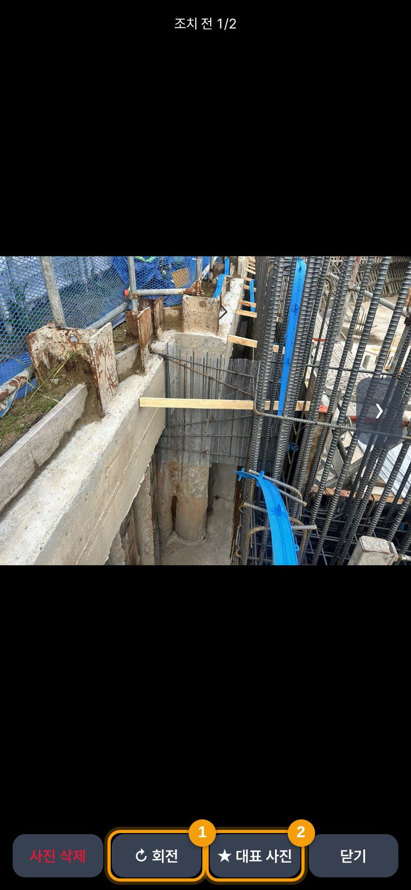
핀 창 위쪽
- 상태: 처음엔 미조치예요. 조치가 끝나면 조치완료(9번).
- 팀: 담당 팀을 고르면 핀 색과 번호가 그 팀 것으로 바뀌어요. 설정에서 내 기본 팀을 정해 두면 처음부터 골라져 있어요. 품질팀을 고르면 업체·공종 대신 종류(균열·재료분리)가 나와요(13번).
핀 창 아래쪽
- 업체: 이 도면의 업체 목록에서 고르거나 직접 입력. 모르면 미분류. 목록은 ⚙ 목록 편집이나 도면 ⋯ › 업체 목록에서 팀별로 등록·삭제해요(도면마다 따로).
- 공종: 예) 골조, 방수, 전기. 한 번 쓴 공종은 목록에서 골라요.
- 내용: 이슈·하자·전달사항을 적어요.
- 사진(조치 전): 촬영 또는 앨범을 눌러 넣어요. 여러 장 넣을 수 있고, 찍은 날짜별로 묶여 보여요. 컴퓨터에서는 사진을 핀 창에 끌어다 놓거나 붙여넣기 해도 돼요(아이폰 HEIC 사진도 돼요).
사진 크게 보기: 두 손가락으로 벌리거나 두 번 누르면 확대, 옆으로 밀면 다음 사진이에요.
- ↻ 회전: 누울 때마다 시계 방향 90°.
- ☆ 대표 사진: 사진대지에 들어갈 사진을 정해요.
컴퓨터에서는 핀을 누르면 핀 창이 화면 오른쪽에 붙어 열려서 도면을 가리지 않아요.
9조치완료
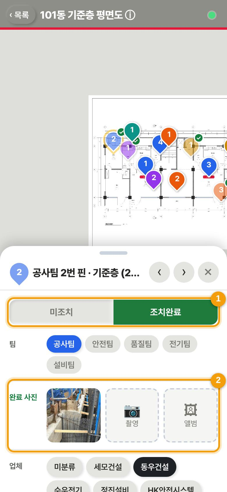
- 조치완료를 누르면 누른 사람과 시각이 기록되고, 핀을 만든 사람에게 알림이 가요.
- 조치완료 사진 칸이 생겨요. 조치 후 사진을 넣으면 사진대지에 조치 전·후가 나란히 들어가요.
다른 사람이 만든 핀도 조치완료와 조치 후 사진은 누구나 넣을 수 있어요.
10댓글
협업 도면의 핀에는 댓글을 달 수 있어요. 질문, 확인 요청, "오늘 오후까지 하겠습니다" 같은 답을 핀 위치와 함께 남겨요.
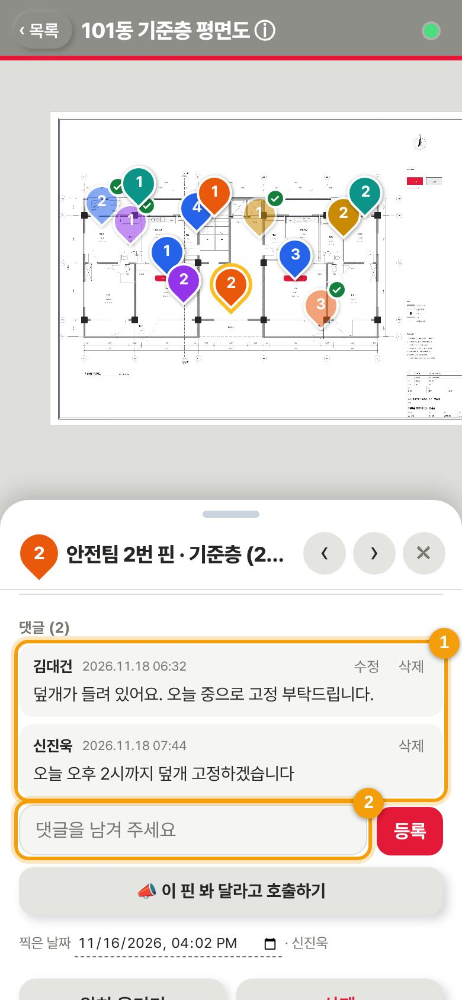
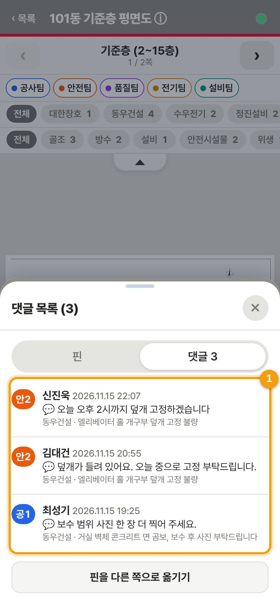
핀 창의 댓글
- 댓글은 오래된 것부터 쌓여요. 내 댓글은 수정(‘수정됨’ 표시)·삭제할 수 있어요.
- 댓글 칸에 적고 등록. 핀을 만든 사람과 그 핀에 댓글 단 사람에게 알림이 가요.
목록 › 댓글 탭
- 그 도면의 댓글을 최신순으로 모아 봐요. 누르면 그 핀으로 바로 가요.
11핀 목록
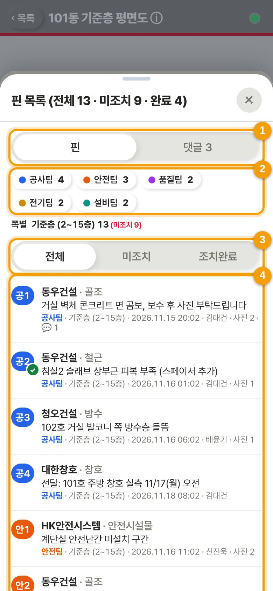
- 핀 · 댓글 탭(협업 도면).
- 팀으로 거르기(여러 팀 가능).
- 전체 · 미조치 · 조치완료로 거르기.
- 업체·공종, 내용, 쪽, 등록일·등록자, 사진·댓글 수가 보여요. 누르면 도면에서 그 핀으로 이동해요.
12내보내기 (사진대지 PDF)
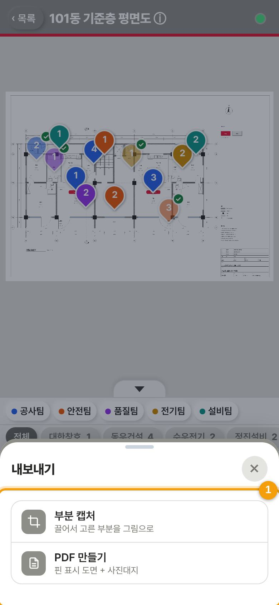
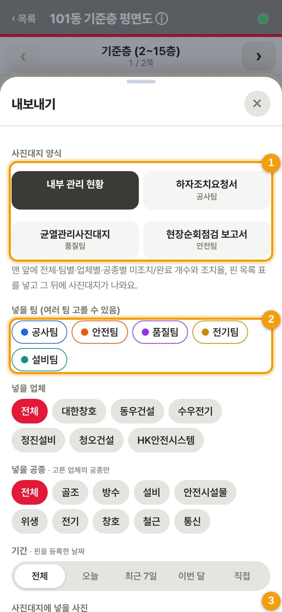
내보내기를 누른 모습
- 부분 캡처: 도면 일부를 그림으로 만들어요(펜으로 표시 가능). PDF 만들기: 핀 표시 도면 + 사진대지.
PDF 만들기
- 사진대지 양식: 내부 관리 현황(전체 현황표와 핀 목록), 하자조치요청서(공사팀, 업체별로 묶음), 균열관리사진대지(품질팀, 균열 관리 대장). 팀을 하나만 고르면 그 팀 양식이 저절로 골라져요.
- 넣을 팀 · 업체 · 공종은 도면 화면에서 골라 둔 그대로 시작해요(품질팀만 고르면 업체·공종 대신 종류). 넣을 핀은 전체·미조치만·조치완료만에서 골라요. 하자조치요청서는 처음부터 미조치만이고, 핀 번호를 팀 글자 없이 1, 2, 3처럼 숫자로만 넣어요. 기간(오늘·최근 7일·이번 달·직접)으로 그 기간에 만든 핀만 넣을 수 있고, 넣을 사진(대표 사진만 / 사진 전부)도 골라요.
- 미리보기로 먼저 확인하고, PDF 만들기 → 파일 이름 확인 → 보내기로 메일·메신저 등에 바로 보내거나 파일에 저장해요.
만들어지는 PDF는 이렇게 생겼어요(내부 관리 현황).
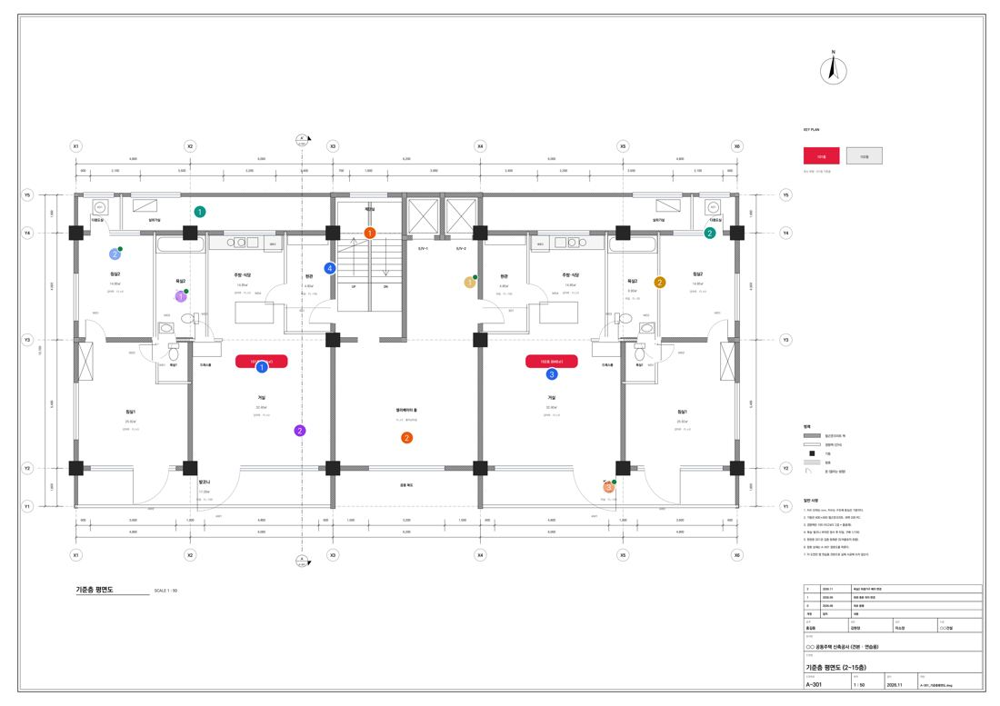
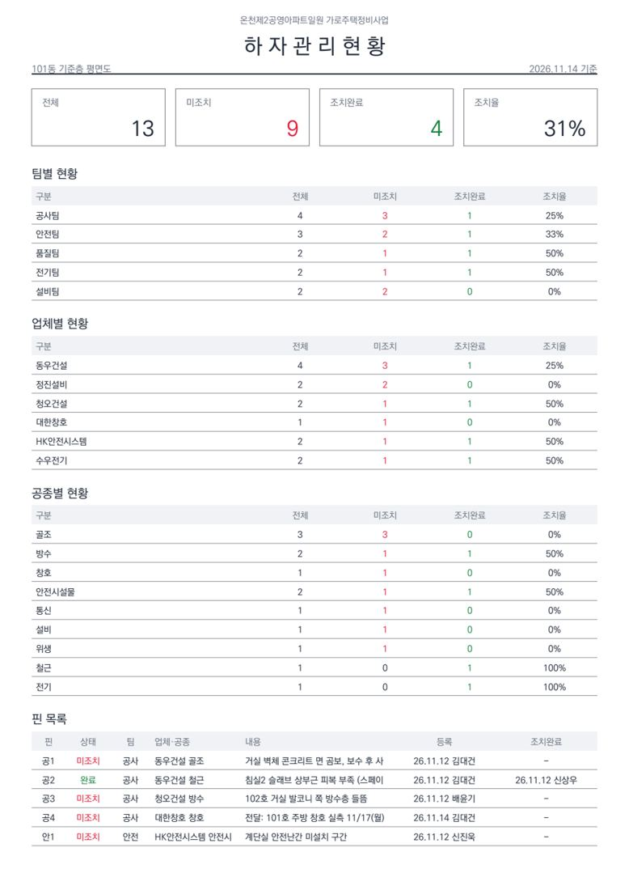
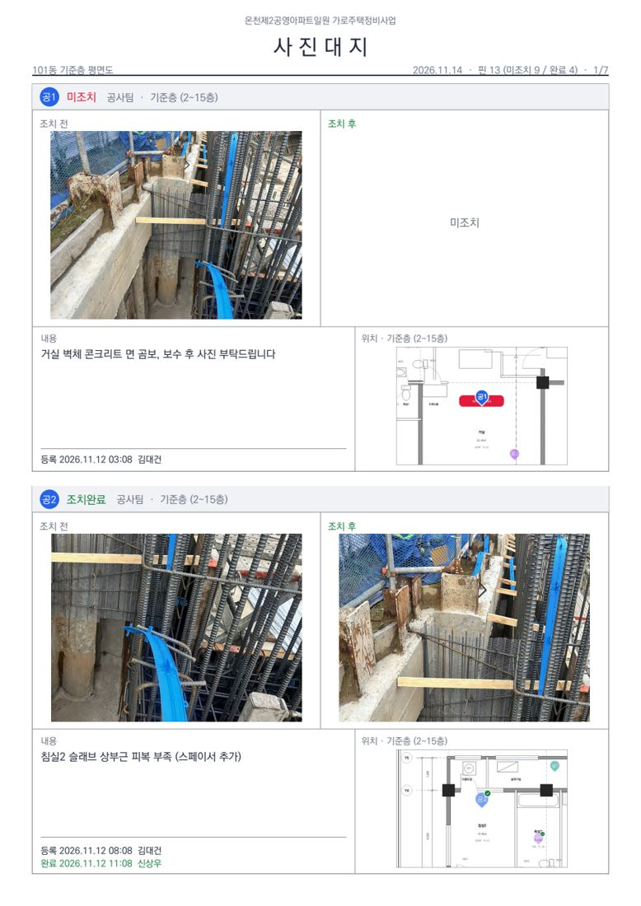
13균열 관리 (품질팀 엑셀)
품질팀이 콘크리트 균열을 핀으로 찍어 두면, 현장에서 쓰던 「콘크리트 구조물 균열관리 현황」 엑셀 양식을 그대로 채운 파일이 한 번에 나와요.
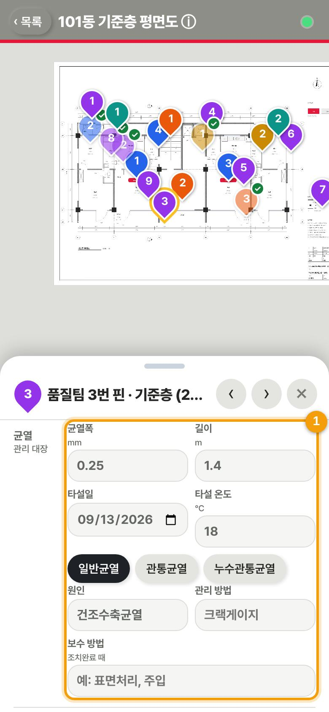
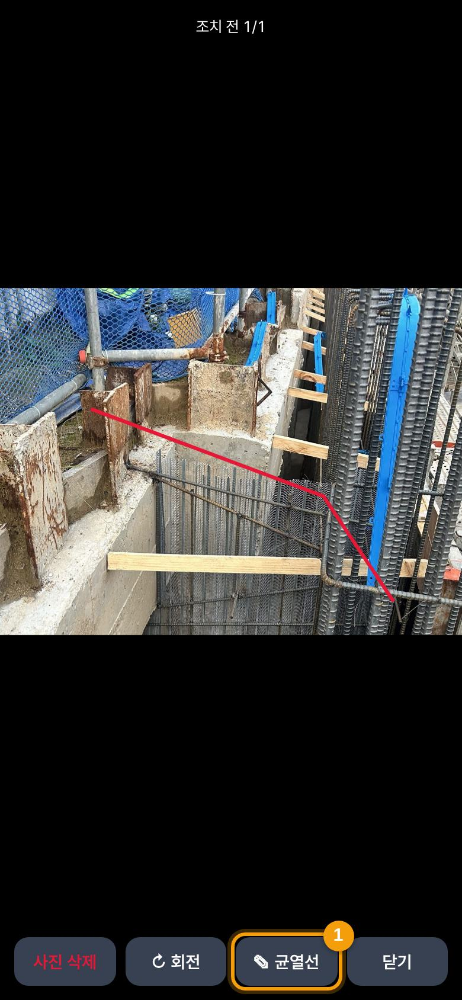
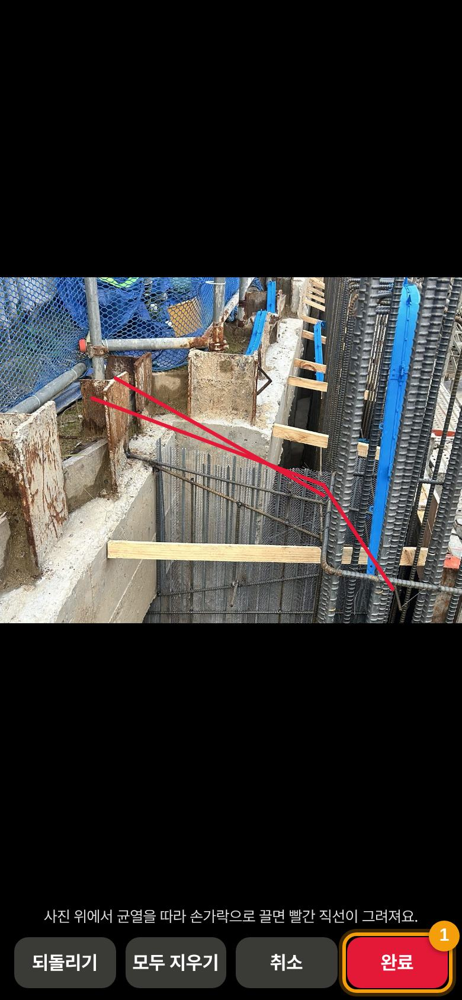
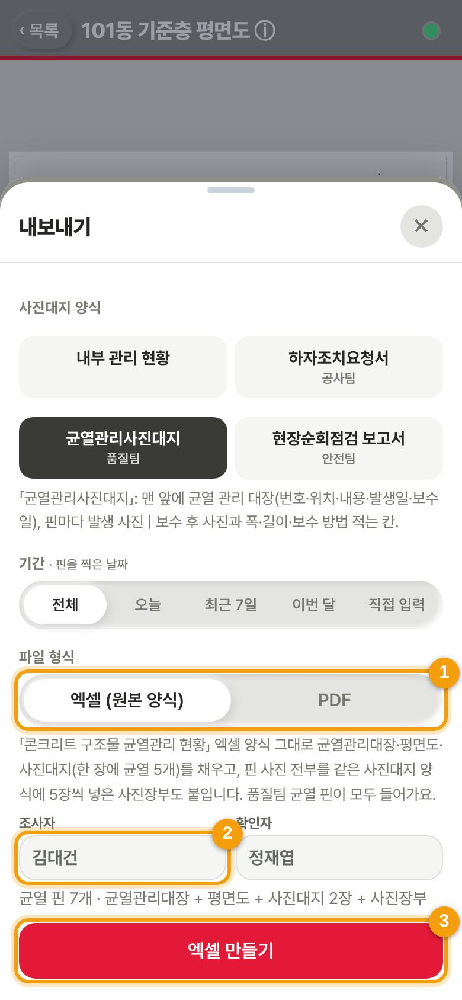
- 핀 창에서 팀을 품질팀, 종류를 균열로 고르면 균열 칸이 생겨요. 균열폭(mm) · 길이(m) · 타설일 · 타설 온도를 넣고, 일반균열 · 관통균열 · 누수관통균열 중 하나를 골라요. 원인(처음엔 건조수축균열), 관리 방법(예: 크랙게이지), 보수 방법(조치완료 때)도 적어요.
- 사진을 크게 열고 ✎ 균열선을 눌러요.
- 사진 위에서 균열을 따라 손가락으로 끌면 빨간 직선이 그려져요. 여러 줄 그릴 수 있고 되돌리기 · 모두 지우기가 있어요. 완료를 누르면 저장돼요.
- 내보내기 → PDF 만들기 → 균열관리사진대지를 고르고 파일 형식을 엑셀 (원본 양식)으로 둬요. 팀·조치 상태는 고르지 않아도 품질팀 균열 핀이 모두 들어가요. 조사자 · 확인자 이름을 넣고 엑셀 만들기.
만들어지는 엑셀에는 이런 시트가 들어가요.
- 균열관리대장: 25개씩 한 장. 번호·타설일·온도·발생 현황·1차 조사(일자·폭·길이)·보수(일자·방법)와 조사자·확인자.
- 평면도: 균열 핀을 표시한 도면(쪽마다).
- 사진대지: 원본 양식 그대로 한 장에 균열 5개. 대표 사진에 그린 균열선이 들어가고, 아래 조사표가 채워져요.
- 사진장부: 같은 사진대지 양식에 그 균열 핀의 사진 전부(발생 사진 + 보수 후 사진)를 5장씩.
범례도 원본 양식 그대로예요. 모두 빨간색으로, 일반균열은 한 줄, 관통균열은 두 줄, 누수관통균열은 두 줄에 빗금으로 그려져요.
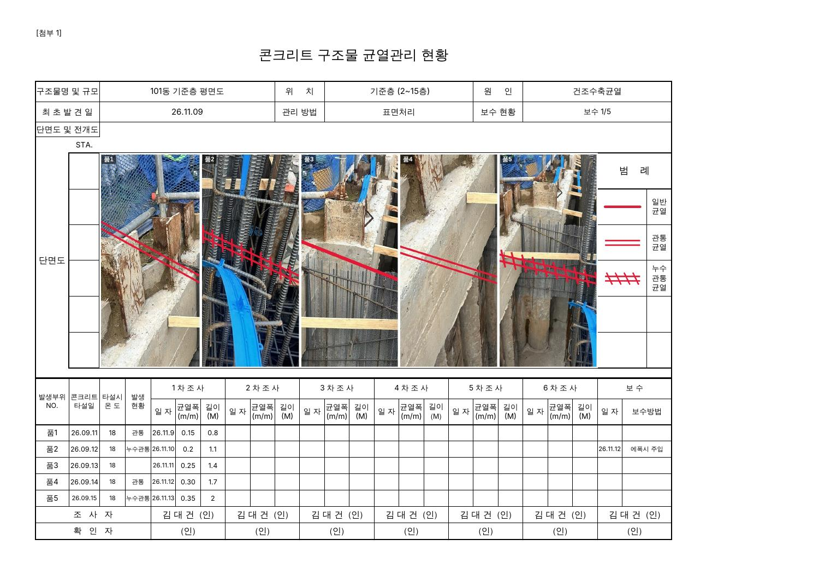
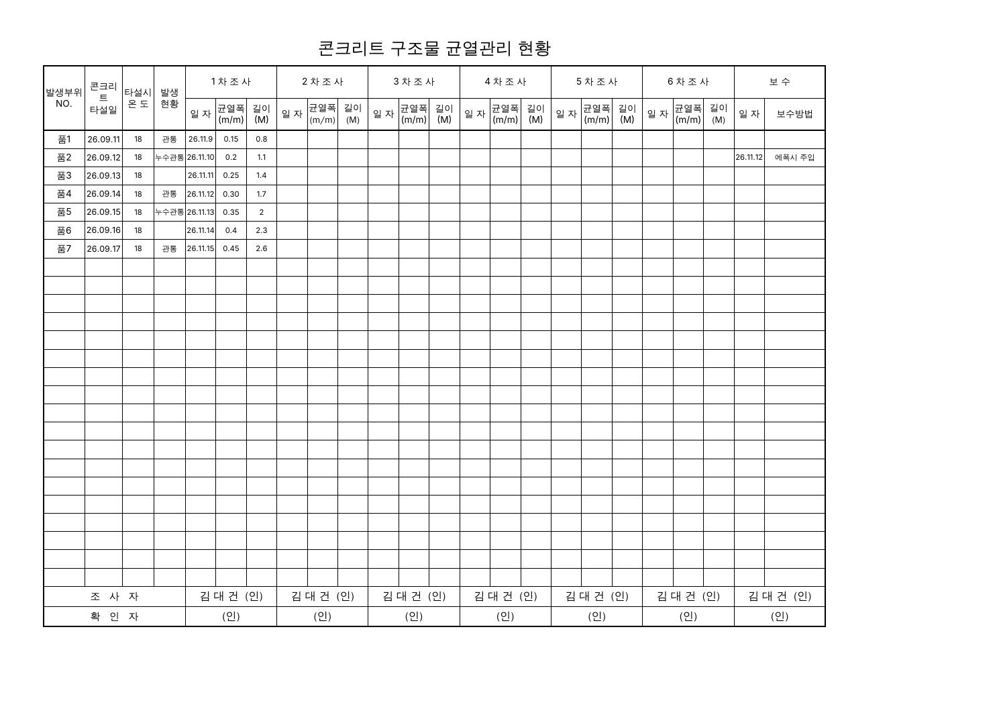
14알림
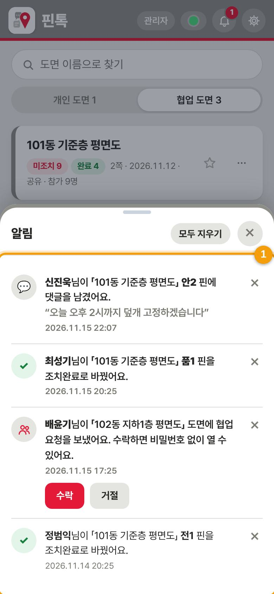
- 이럴 때 알림이 와요: 내 핀이 조치완료됐을 때, 협업 요청을 받았을 때(수락·거절), 내 핀이나 내가 댓글 단 핀에 새 댓글이 달렸을 때, 누가 핀을 📣 호출했을 때, 보낸 문의에 답장이 왔을 때. 알림을 누르면 그 도면·핀으로 가요. ✕ 로 하나씩, 모두 지우기로 한 번에 지워요.
15함께 쓰기 (공유)
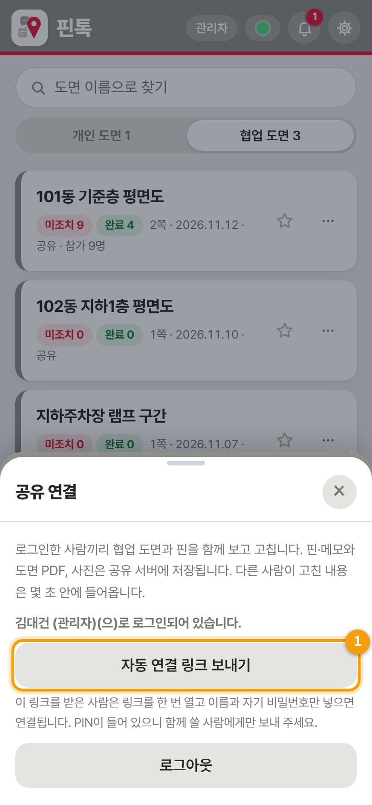
- 자동 연결 링크 보내기: 서버 주소와 PIN이 담긴 링크를 문자 등으로 보내요. 받은 사람은 링크를 열고 이름·비밀번호만 넣으면 돼요.
| 협업 도면 | 개인 도면 | |
|---|---|---|
| 저장 위치 | 공유 서버 + 내 휴대폰 | 내 휴대폰 + 내 계정(서버) · 앱을 지워도 로그인하면 다시 받음 |
| 누가 보나 | 로그인한 사람 모두 (비밀번호를 건 도면은 아는 사람·초대받은 사람만) | 나만 |
| 핀·사진·댓글 | 몇 초 안에 서로 들어가요 | 나만 보고, 댓글은 없어요 |
| 인터넷 | 필요 (끊기면 휴대폰에 모아 두었다가 연결되면 보냄 · 연결 표시등에 “보낼 것 N”) | 없어도 돼요 (연결되면 서버에 보관) |
| 쓰면 좋은 때 | 팀과 이슈·하자·전달사항을 함께 관리 | 개인 메모, 연습, 아직 공유하기 이른 도면 |
- 협업 요청: 도면 ⋯ → 협업 요청 보내기에서 이름을 검색해 고르면, 받은 사람은 알림에서 수락하고 비밀번호 없이 열 수 있어요.
- 참가자: 그 도면에 핀을 올렸거나 조치완료한 사람이 도면 정보와 목록 카드에 나와요.
- 권한: 남의 핀 내용 수정·삭제·이동은 관리자만, 조치완료와 조치 후 사진은 누구나. 협업 도면의 이름·쪽 편집·복사·삭제는 올린 사람과 관리자만.
- 📣 핀 호출: 핀 창 댓글 아래 이 핀 봐 달라고 호출하기로 이름을 골라 알림을 보내요. 받은 사람이 알림을 누르면 그 핀이 바로 열려요.
16설정
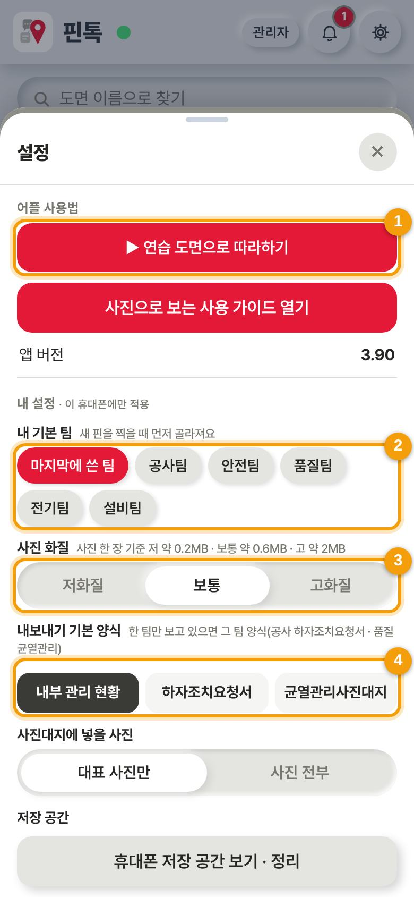
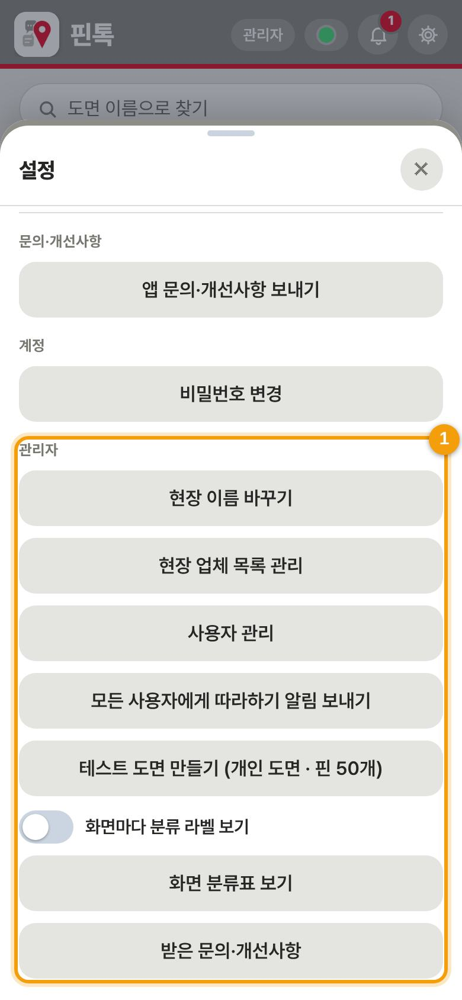
설정
- 어플 사용법: 연습 도면으로 따라하기, 이 가이드 열기.
- 내 기본 팀: 새 핀을 찍을 때 먼저 골라지는 팀.
- 사진 화질: 사진 한 장 기준 저화질 약 0.2MB · 보통 약 0.6MB · 고화질 약 2MB. 보통이면 사진대지에 충분해요.
- 내보내기 기본 양식과 넣을 사진, 앱 문의·개선사항 보내기(문의·개선 요청·오류 신고, 답장은 알림으로 와요). 아래에 휴대폰 저장 공간 보기·정리, 현장 이름, 비밀번호 변경(지금 비밀번호 확인 → 새 비밀번호 두 번)이 있어요.
관리자
- 받은 문의·개선사항(읽고 답장하면 보낸 사람에게 알림), 화면마다 분류 라벨 보기(화면 구석에 A1·C2 같은 번호가 나와 고칠 화면을 알려 주기 쉬워요)·화면 분류표, 현장 이름 바꾸기(사진대지 맨 위), 사용자 관리(관리자 지정·비밀번호 초기화), 모든 사용자에게 따라하기 알림, 테스트 도면 만들기(핀 50개 · 개인 도면).
17따라하기로 연습
앱 안에서 견본 도면(공동주택 1층 평면도 A-101, 1쪽)을 열고, 테두리가 가리키는 버튼을 직접 눌러 가며 배워요. 25단계로 핀 찍기부터 목록·내보내기·도면 관리·알림·설정까지 다뤄요. 견본 도면은 개인 도면이라 다른 사람에게 보이지 않아요.
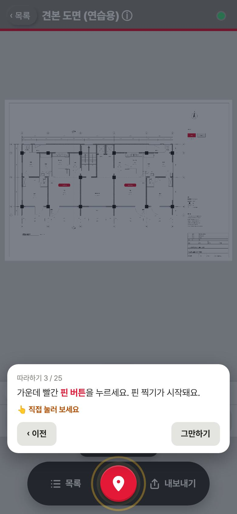
설정 → ▶ 연습 도면으로 따라하기로 언제든 다시 시작해요. 중간에 ‹ 이전으로 돌아가거나 그만하기로 끝낼 수 있어요.
18자주 묻는 질문
- 지하층처럼 신호가 안 터지는 곳에서도 되나요?
- 네. 한 번 열어 본 도면은 휴대폰에 저장돼 있어서 열리고, 그때 찍은 핀과 사진은 휴대폰에 보관돼요. 위쪽 점이 빨간색으로 바뀌고, 신호가 잡히면 자동으로 올라가요. 로그인 화면에서는 오프라인으로 들어가기로 바로 들어갈 수 있어요.
- 인터넷이 끊긴 채 협업 도면에 찍은 핀은 없어지나요?
- 아니요. 먼저 휴대폰에 저장되고 “보낼 것”으로 남았다가, 다시 연결되어 그 도면이나 도면 목록을 열면 자동으로 올라가요. 올라가기 전에 핀톡 앱(또는 사파리 웹사이트 데이터)을 지우거나 그 도면을 휴대폰에서 지우면 사라질 수 있으니 조심하세요.
- 핀 번호가 바뀌었어요.
- 핀 번호는 도면·팀마다 찍은 날짜 순서로 매겨져요. 앞쪽 핀을 지우거나 찍은 날짜를 고치면 뒤 번호가 당겨지거나 바뀌어요.
- 사진을 찍거나 고르다가 도면 목록으로 돌아갔어요.
- 핀이 아주 많은 큰 도면에서는 휴대폰 메모리가 모자라 핀톡이 다시 시작될 수 있어요. 10분 안이면 보던 도면과 핀이 저절로 다시 열리니 사진만 한 번 더 넣어 주세요. 자주 그러면 설정 → 사진 화질을 ‘저화질’로 바꿔 보세요.
- 사진이 많아 휴대폰 용량이 걱정돼요.
- 설정 → 휴대폰 저장 공간에서 공유 서버에 이미 올라간 사진을 휴대폰에서 지울 수 있어요. 필요할 때 다시 받아요. 사진 화질을 ‘저화질’로 두면 용량이 1/3로 줄어요.
- DWG 도면 선이 얇아요.
- DWG는 휴대폰 안에서 PDF로 바꿀 때 모든 선을 얇은 선으로 그려요. 선 굵기가 중요하면 캐드에서 PDF로 뽑아 올려 주세요.
- 다른 사람 핀을 고칠 수 없어요.
- 내용 수정·삭제·이동은 만든 사람과 관리자만 할 수 있어요. 대신 댓글로 요청하거나, 조치완료와 조치 후 사진은 누구나 넣을 수 있어요.